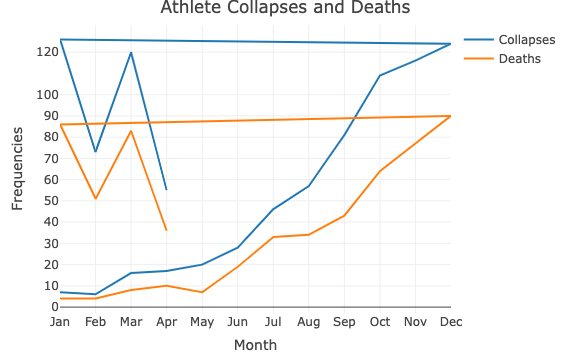
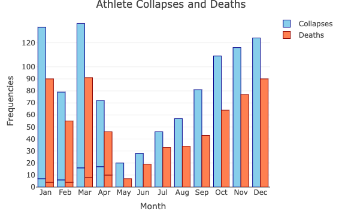

data <- data.frame(
month = factor(c("Jan", "Feb", "Mar", "Apr", "May", "Jun", "Jul", "Aug", "Sep", "Oct", "Nov", "Dec", "Jan", "Feb", "Mar", "Apr"),
levels = c("Jan", "Feb", "Mar", "Apr", "May", "Jun", "Jul", "Aug", "Sep", "Oct", "Nov", "Dec")),
collapses = c(7, 6, 16, 17, 20, 28, 46, 57, 81, 109, 116, 124, 126, 73, 120, 55),
deaths = c(4, 4, 8, 10, 7, 19, 33, 34, 43, 64, 77, 90, 86, 51, 83, 36)
)Redesigns
Improving to dual axis line chart
Loading Required Libraries: We start by loading the
plotlylibrary.say : library(plotly)
Creating Sample Data: Next, we create a data frame called
data. This data frame contains three columns:month,collapses, anddeaths.monthis a factor variable representing the months of the year, whilecollapsesanddeathsrepresent the number of athlete collapses and deaths, respectively, for each month.
We specify the data (data), x-axis (~month), and y-axis (~collapses). We set the type of plot as 'scatter' and mode as 'lines', and name the trace as 'Collapses'. The we plot as shown below:

Fig 2: 1 Redesign of 1024 Athlete Cardiac Arrests, Serious Issues, 666 Dead, After COVID Shot into dual axis line chart.
Why we re-designed to dual axis line chart?
The line chart effectively displays the trend over time, showcasing that collapses significantly outnumber deaths. The y-axis values are reasonable, aiding in understanding the scale of occurrences.
To enhance clarity in distinguishing collapses from deaths per month, we can consider redesigning the graph as a dual-axis line chart. This modification would enable viewers to clearly visualize and compare the trends of collapses and deaths simultaneously, providing a clearer understanding of the relationship between the two variables.
overall:
The current line chart effectively illustrates the trend over time, indicating a significant disparity between collapses and deaths.
The y-axis values are appropriately scaled, facilitating comprehension of the magnitude of occurrences.
Redesigning the graph as a dual-axis line chart would enhance clarity by allowing viewers to compare collapses and deaths directly, providing a more comprehensive understanding of their relationship and trends over time.
Improving to bar chart
Lets use the same data set:
data <- data.frame(
month = factor(c("Jan", "Feb", "Mar", "Apr", "May", "Jun", "Jul", "Aug", "Sep", "Oct", "Nov", "Dec", "Jan", "Feb", "Mar", "Apr"),
levels = c("Jan", "Feb", "Mar", "Apr", "May", "Jun", "Jul", "Aug", "Sep", "Oct", "Nov", "Dec")),
collapses = c(7, 6, 16, 17, 20, 28, 46, 57, 81, 109, 116, 124, 126, 73, 120, 55),
deaths = c(4, 4, 8, 10, 7, 19, 33, 34, 43, 64, 77, 90, 86, 51, 83, 36)
)Then plot_ly() function initializes the plot by defining the dataset (data), the variable to be represented on the x-axis (~month), and the variable to be represented on the y-axis (~collapses) for collapses. By setting the type argument to 'bar', it creates a column bar chart, naming this trace as ‘Collapses’.
To incorporate another dataset onto the plot, the add_trace() function is utilized. Here, it adds a new trace representing the deaths data (~deaths) against the same months (~month).

Fig 3: 1 Redesign of 1024 Athlete Cardiac Arrests, Serious Issues, 666 Dead, After COVID Shot into bar chart.
Why we re-designed to barplot?
By converting into bar graph, we can achieve the following :
This Bar graphs enable a clear and instant comparison between different variables.
This Bar graph provide a two-dimensional portrayal of data, which is often simpler for humans to comprehend compared to raw numerical data. By presenting collapses and deaths on a shared scale, viewers can swiftly grasp the relative variances and trends between the two variables.
Bar graphs make it easy to spot the highest and lowest values for each variable in each month. This can be achieved by observing the tallest and shortest bars. This insight is crucial for understanding the severity of collapses and deaths over time and identifying any exceptional occurrences.
By visually representing collapses and deaths side by side, viewers can readily discern patterns and trends. Noting that there are more collapses than deaths in each month, in this case, highlights a potentially significant issue that may warrant further investigation or intervention.
Graphical representations streamline the communication of insights derived from the data. Instead of presenting viewers with raw figures or extensive tables, a bar graph condenses the information into a visually understandable format, making it easier for stakeholders to comprehend and act upon.